Pots Analyzed
32
Version 1.10 Research
Indoor multi-pot photos converted into target-pot overlays, in-pot coverage metrics, spill estimates, and growth-ready tracking signals.
Pots Analyzed
32
Ready For Masks
8
Avg Focus Score
0.65
Avg In-Pot Spill
24.0%
Growth Baseline Coverage
43.8%
Top Next Step
needs_neighbor_disambiguation
| Algorithm | Metric | Status | Availability | Variation | Why It Matters |
|---|---|---|---|---|---|
primary_canopy_anchor | anchor_confidence | helpful | 100.0% | 0.127 | Provides a stable starting point for indoor pot localization when multiple neighboring pots are visible. |
label_box_detection | label_confidence | helpful | 87.5% | 0.278 | Adds a second cue for indoor pot identity and helps diagnose cases where plant-only anchoring is ambiguous. |
pot_polygon_focus_crop | focus_score | helpful | 100.0% | 0.200 | Turns multi-pot frames into a reproducible per-pot region so growth metrics are less contaminated by adjacent seedlings. |
in_pot_vegetation_segmentation | pot_coverage | helpful | 100.0% | 0.917 | Closer to the real indoor use case than whole-image vegetation coverage because it suppresses nearby-pot noise. |
neighbor_spillover_estimation | neighbor_spill_ratio | helpful | 100.0% | 0.911 | Flags frames that still need custom masking or tighter capture before they are trustworthy for longitudinal tracking. |
temporal_growth_delta | growth_delta | promising_with_more_data | 43.8% | 4.314 | Gives a directional growth signal for pots that already have a baseline capture, even before a learned detector exists. |
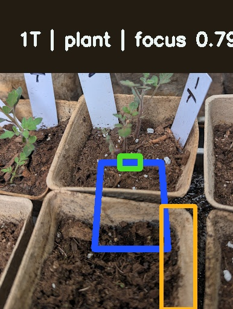
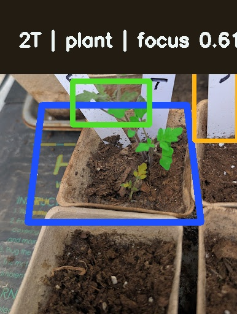
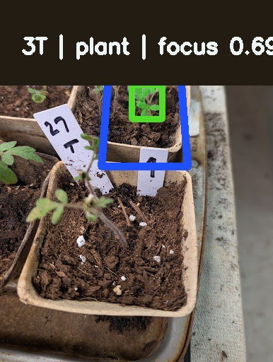
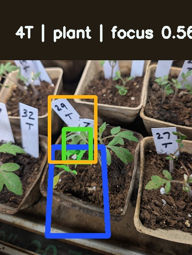
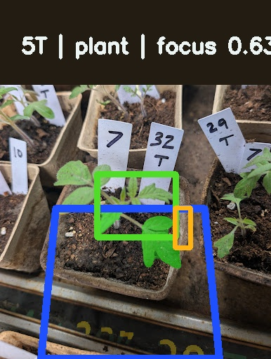
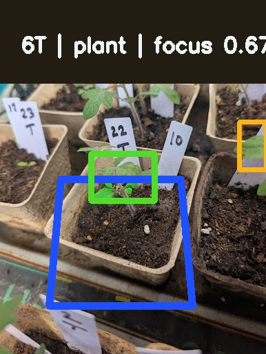
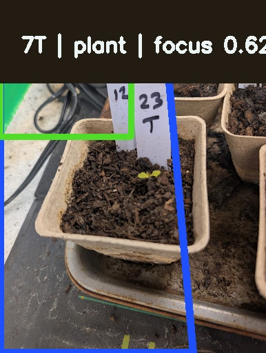
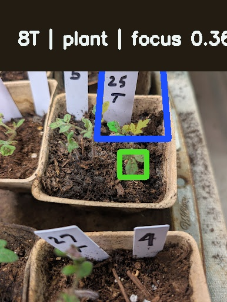
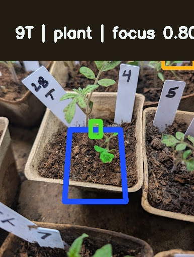
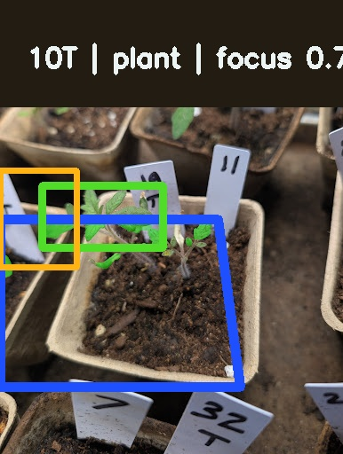
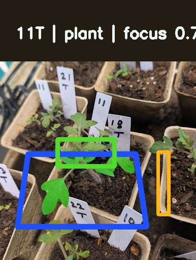
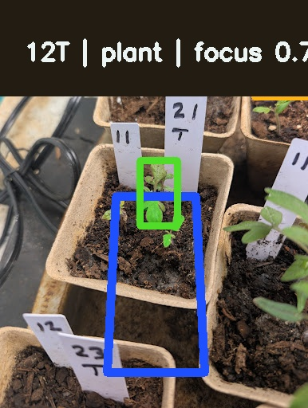
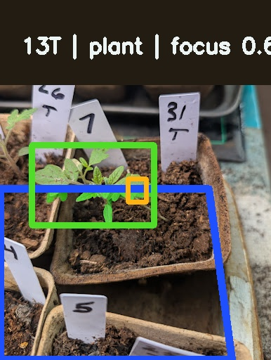
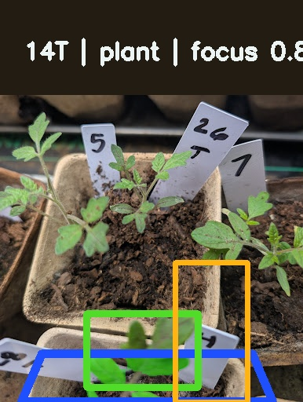
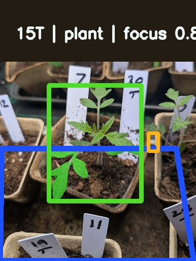
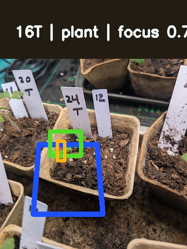
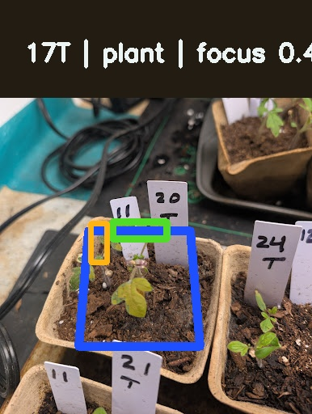
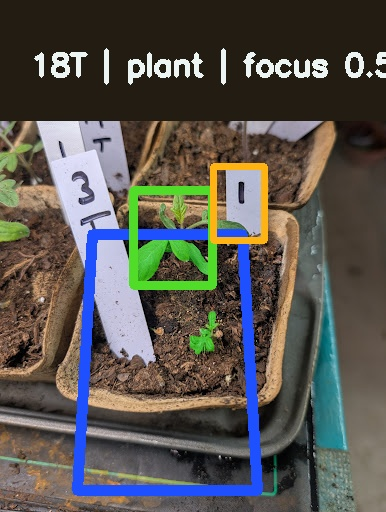
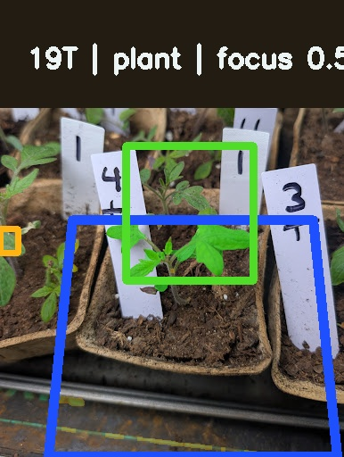
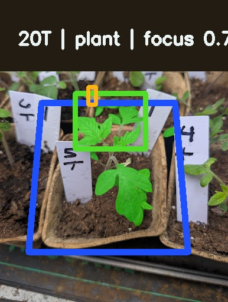
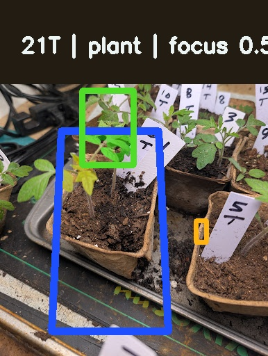
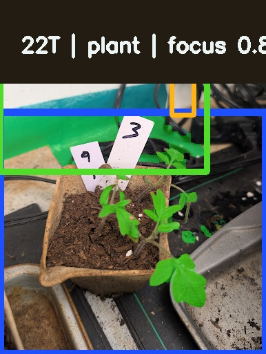
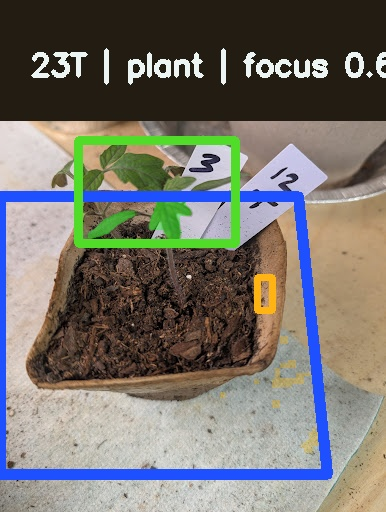
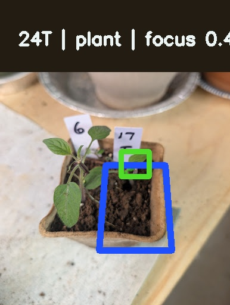
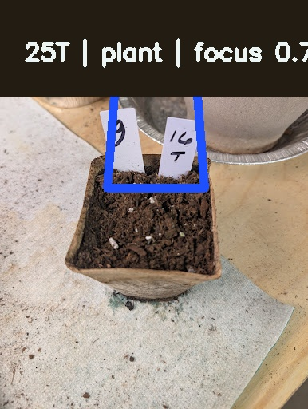
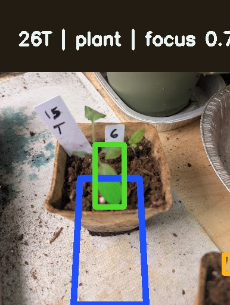
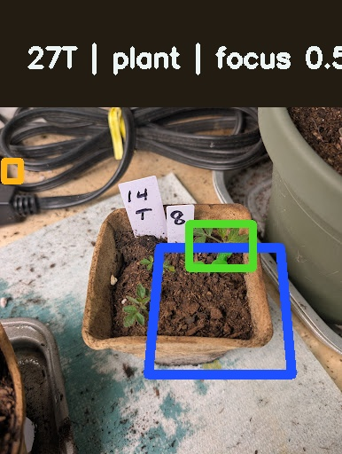
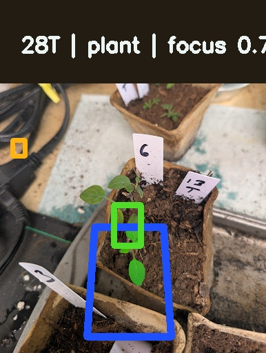
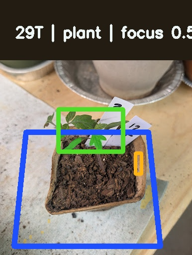
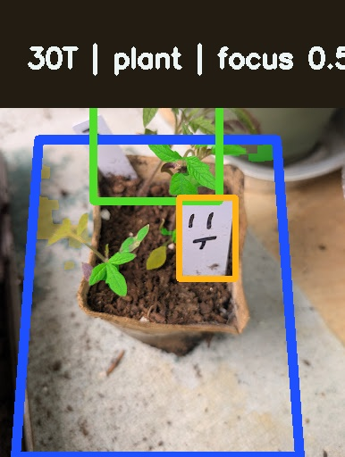
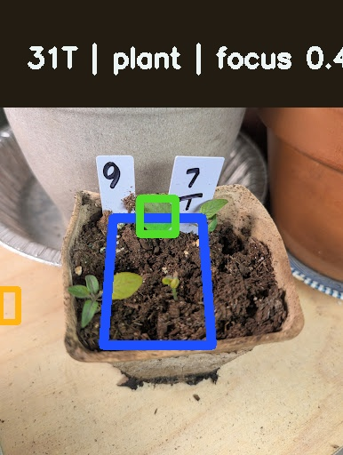
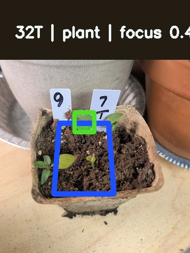